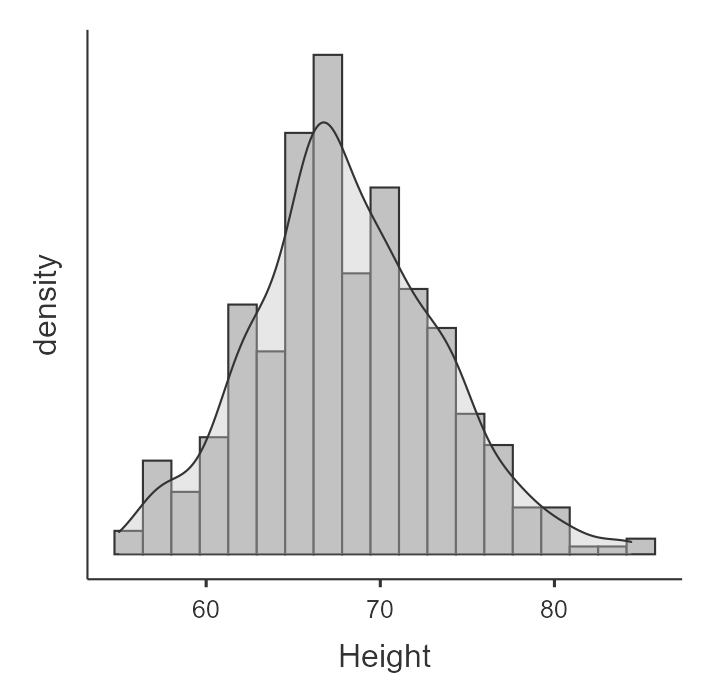
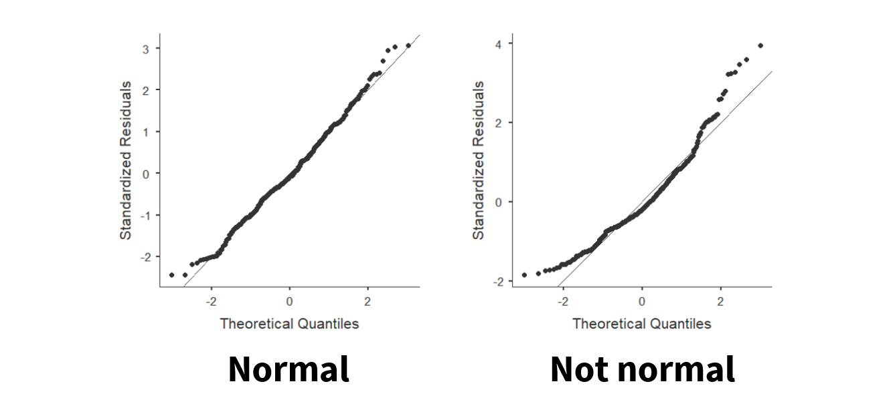
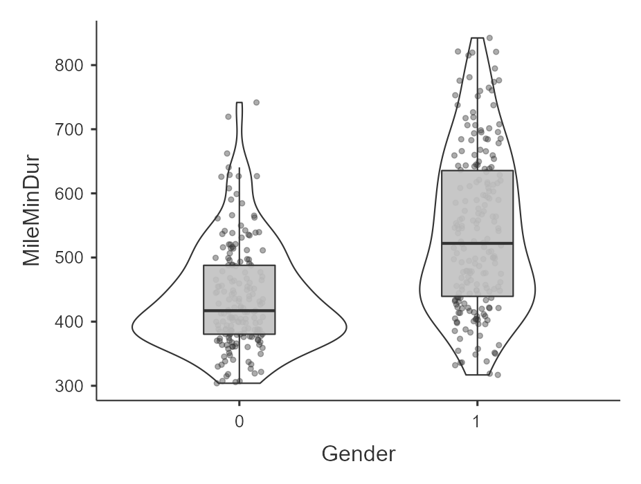

9.2 Parametric assumptions
Most of the inferential statistics we’ll be learning in this class are parametric statistics which means it’s based on certain assumptions about the shape of the distribution (in this class we’ll focus on the normal distribution).
It’s important to check assumptions because your data may not always be what they seem. You need to look at your data in all sorts of ways to make sure it’s satisfactory for inferential statistics. This video is a fun little look into how our eyes can deceive us and why we need to look at things from a variety of angles and perceptions.
There are four basic assumptions of most parametric tests:
- Interval or ratio (i.e., continuous) dependent variable
- Independent scores on the dependent variable
- Normal distribution
- Homogeneity of variances
Let’s discuss these in turn and how to test for them.
Interval/ratio data
If we are performing a parametric test, then the dependent variable (DV) must be measured at the interval or ratio level. It is important that the data has proportional intervals between levels of the variable, and ordinal variables often do not meet this assumption.
It is very important to avoid treating ordinal variables as continuous variables. We cannot calculate a mean or difference between ordinal values, but we can for continuous variables. What is often done—and is often inappropriate to do—is treat Likert-scale items as a continuous DV. What we can do is take a sum or average of multiple Likert-scale items and treat that sum or average as a continuous DV (although some argue this is also inappropriate).
There is no “test” we can perform here to test whether our data meets this assumption. Rather, you will need to just recognize whether data is interval/ratio (continuous) or ordinal/nominal (categorical).
Independent scores
In between-subjects designs (e.g., the independent t-test or one-way ANOVA), data from different participants should be independent meaning that the response of one participant does not influence the response of another participant. We violate this assumption in the case of nested data (e.g., when our sample consists of students in three different classrooms, it is likely that students within classrooms are more similar than we would expect otherwise).
In within-subjects designs (e.g., the dependent t-test or repeated measures ANOVA), we automatically violate the assumption because of course the scores of one participant in one condition will relate to their scores on another condition. However, their scores should still not influence any other participant’s response.
This is another assumption, like interval/ratio data, that we do not ever test but is a function of knowing our data, how it was collected, and whether one participant’s data is thought to affect another participant’s data.
Normal distribution
For all our statistics, our dependent variable needs to be normally distributed, or have a normal distribution. You may have also heard it called a bell-shaped curve. It has really important statistical properties which is why most of the inferential statistics we’ll be learning in this class are parametric statistics that assume our data has a normal distribution.
Some of the important statistical properties of the normal distribution:
Data are equally distributed on both sides of the mean.
Skew and kurtosis are equal to 0, which is to say there is no skew or bad kurtosis.
The mean is equal to the median, and both are the exact center of the distribution of data. In other words, if your mean and median are not the same, you know you have skewed data! In fact, if your median < mean then you have positive skew and if your median > mean then you have negative skew.
We know the percentage of cases within 1, 2, 3, etc. standard deviations from the mean.
There are four ways to test for normality:
- Visualize the distribution
- Test the skew and kurtosis
- Conduct a Shapiro-Wilk test
- Visualize the Q-Q plot
We are going to learn about four different methods of checking normality. For your homework assignments, you should always use all four methods to check normality.
Note that sometimes the four tests do not always agree with one another. For example, everything might look good but Shapiro-Wilk’s test is statistically significant or perhaps the visual distribution looks non-normal but everything else looks fine. In those cases, it is up to you as the researcher to make a judgment. Reasonable people do different things, but as long as you can back up your judgment then you’ll be fine. Personally, I tend to prioritize the visual inspection of the data over the other pieces of evidence, and I sometimes am more cautious than not just to be safe.
Visualize the distribution
In jamovi, we can go to the Explorations option and choose Descriptives. Under Plots, we can choose a histogram and/or density plot (figure on the left, which shows both) or boxplot and/or violin plot and/or data points (figure on the right, which shows all three). We look at this data and visually inspect with our eyes whether the data is normally distributed based on what we know a normal distribution (bell curve) looks like. Note that the violin plot is the density plot transposed to be vertical and mirrored!
In our case, height looks pretty fairly normally distributed.


Test the skew and kurtosis
In jamovi, we can go to the Explorations option and choose Descriptives. Under statistics, choose skew and kurtosis. You’ll have to do a bit more work to actually figure out whether the skew and kurtosis is problematic though.
For height, here is our skew and kurtosis:
| Descriptives | Height |
| Skewness | .230 |
| Std. error skewness | .121 |
| Kurtosis | .113 |
| Std. error kurtosis | .241 |
We need to calculate z-scores for skew and kurtosis. We do that by dividing the value by its standard error:
Skew: .230 / .121 = 1.90
Kurtosis: .113 / .241 = .47
How do we know if it’s problematic? If the z-score for skew or kurtosis are less than |1.96| then it is not statistically significant and is normally distributed. However, if the z > |1.96| then it is statistically significant and is not normally distributed. In this case, both skew and kurtosis z-scores are less than 1.96 so we meet the assumption of normal distribution as evidenced by skew and kurtosis.
Why 1.96? Refer back to the t-table we learned about in Chapter 4 when we did hand calculations for hypothesis testing. At the very bottom of the two-tailed, .05 alpha t-test with a large degrees of freedom (z) is 1.96. In other words, 1.96 is the critical value of z when alpha is .05 and we have a two-tailed test.
Shapiro-Wilk test
In jamovi, we can go to the Explorations option and choose Descriptives. Under statistics, choose Shapiro-Wilk. It will provide you the Shapiro-Wilk W test statistic and its respective p-value. In our case, Shapiro-Wilk’s for height is 68.03, p = .070. If the Shapiro-Wilk’s test is not statistically significant then it is normally distributed. However, if the Shapiro-Wilk’s test is statistically significant then it is not normally distributed. In this case, our Shapiro-Wilk’s test is not statistically significant so we meet the assumption of normal distribution as evidenced by the Shapiro-Wilk’s test.
You can learn more about the Shapiro-Wilk test if you are interested.
What’s weird about the z-score and Shapiro-Wilk’s test is that we actually want non-statistically significant results here! That’s because the null in these cases is that the data is normally distributed, and we want our data to be normally distributed. So if our p > .05, we fail to reject the null hypothesis, and that suggests the data is normally distributed.
Q-Q plot
Last, we can visualize the Q-Q plot. In jamovi, we can go to the Explorations option and choose Descriptives. Under plots, choose Q-Q plot. We don’t need to go into details of what is being visualized, but what we are looking for is that the data points fall along the diagonal line. On the figure on the left, we can see that the data is pretty well falling on the diagonal line (with small deviations at the tails) so we can say it looks normally distributed. However, on the figure on the right, the data points deviate from the diagonal line pretty significantly and so we can say it does not look normally distributed.

What is enough deviation of the dots from the line? That’s up to you, but typically I focus on what the middle looks like and that the ends don’t look too far off.
Here’s a video by Alexander Swan on interpreting a Q-Q plot in jamovi:
Homogeneity of variance
Our third assumption is that the variance in the DV needs to be the same at each level of the IV. If we fail to meet the assumption, we say we have heterogeneity. It might help you to remember that the prefix homo means same and hetero means different.
Whereas the normality assumption is only for the DV, the homogeneity of variance assumption is looking at the DV split by the IV.
We can test this assumption in three ways:
- Visualize the distribution of the DV across the groups of the IV
- Examine the variance values
- Levene’s test
We are going to learn about three different methods of checking homogeneity of variances. For your homework assignments, you should always use all three methods to check homogeneity of variances.
Note that sometimes the three tests do not always agree with one another. For example, everything might look good but the visual distribution does not look like they have equal variances or the Levene’s test might be statistically significant. In those cases, it is up to you as the researcher to make a judgment. Reasonable people do different things, but as long as you can back up your judgment then you’ll be fine.
Visualize the distribution of the DV across groups of the IV
First, we can look at the data points across groups. This can be done by choosing a plot in the Descriptives analysis and adding your IV to the “Split By” box. Then select Box Plot, Violin, Data (Jittered) under Plots.
For example, here’s an example of data that violates the assumption of homogeneity of variance (gender by mile time) because the variance in scores for females (coded as 1) is a lot wider than the variance in scores for males (0). I am looking at the data points and violin plot to see the spread; the 1 looks wider where as the 0 looks skinnier.

Examine the variances across groups
Similarly, in the Exploration –> Descriptives under Statistics you can ask for Variance after splitting the DV by the IV. The variance for Gender == 0 (male) is 6796.20 whereas the variance for Gender == 1 (female) is 15401.55. Females have 2.26 times greater variance compared to males. Clearly, there is much greater variability for females than males for time it takes to run the mile.
Levene’s test
When we perform inferential statistics that have the assumption of homogeneity of variance, in jamovi there will be a check box to check the assumption. It will perform Levene’s test.
However, you may be testing the assumption prior to running your analysis (or learning about inferential statistics just yet). In that case, to perform Levene’s test, go to Analyses then ANOVA then One-way ANOVA. Move your continuous variable to the Dependent Variables box and move your nominal variable to the Grouping Variable box. Check the box “homogeneity test.” Only report the results of Levene’s test; ignore the one-way ANOVA results!
Here’s the result of Levene’s test for the effect of gender on mile duration:
| Levene’s | F | df1 | df2 | p |
|---|---|---|---|---|
| MileMinDur | 41.33 | 1 | 381 | <.001 |
Like the other tests above, a non-significant Levene’s test means we meet the assumption of homogeneity of variance. However, if Levene’s test is statistically significant, then we fail to meet the assumption of homogeneity of variance and have heterogeneity of variance. In this case, our test is statistically significant so, in combination with our plot above, we say we violated this assumption.
Just like the z-score and Shapiro-Wilk’s test, for Levene’s test we actually want non-statistically significant results here! That’s because the null is that there is homogeneity of variance, and we want our data to be homogeneous. So if our p > .05, we fail to reject the null hypothesis, and that suggests the data is homogeneous.
Recapping parametric assumptions
Let’s summarize the four assumptions and generally how to test for them:
- Interval or ratio (i.e., continuous) dependent variable
- Know your levels of measurement and make sure the dependent variable is continuous.
- Independent scores on the dependent variable
- Know your research design and how the data was collected. Make sure that one participant’s data isn’t thought to affect another participant’s data.
- Normal distribution of the dependent variable
Visualize the distribution with a histogram and/or density plot of the dependent variable
Test the skew and kurtosis by calculating the z-scores
Test using the Shapiro-Wilk test
Examine the Q-Q plot for deviations from the diagonal line
- Homogeneity of variances
- Visualize the distribution by a boxplot, violin plot, and/or data (jittered recommended) with the dependent variable split by the independent variable
- Examine the variances of the dependent variable split by the independent variable
- Test using Levene’s test